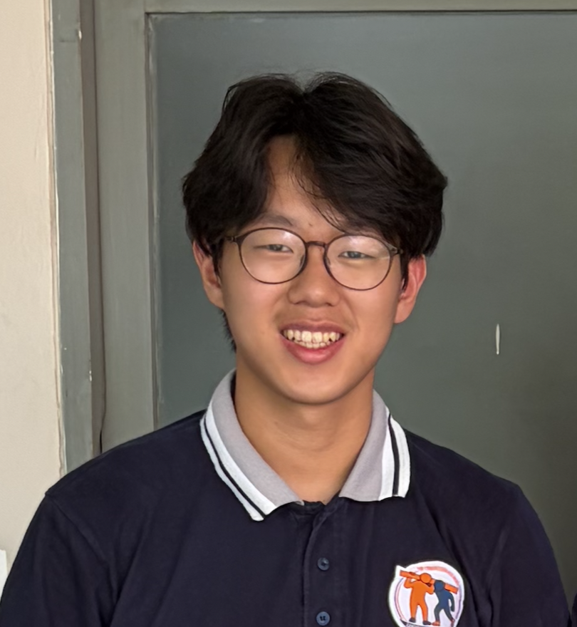
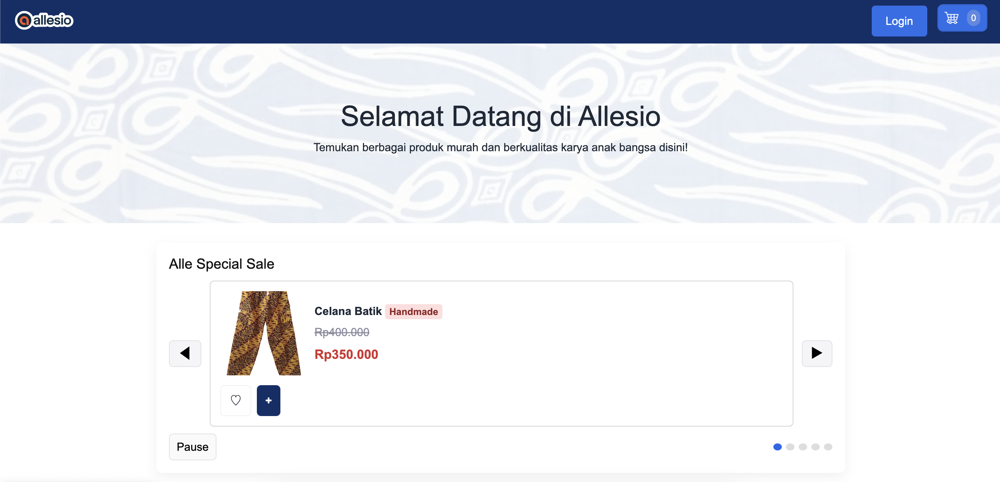
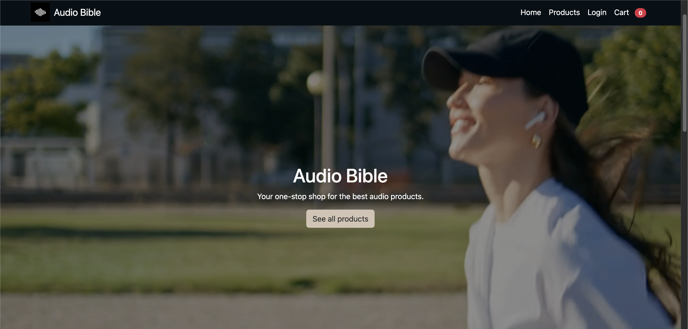

Manuel Jason Mardjono
Tentang Saya
Deskripsi singkat tentang diriku
Saya adalah Jason, saya seorang siswa di kelas XIA1 yang sedang belajar Informatika. Saya tertarik pada cara kerja teknologi dan ingin memahami logika di balik aplikasi yang sering kita gunakan sehari-hari. Sebenarnya, saya ingin menjadi dokter dimasa yang akan datang, tetapi saya rasa pelajaran ini membantu saya untuk menjadi orang yang lebih kritis melalui pelajaran Informatika.
Selama semester kedua ini, saya belajar cara membuat situs web dengan menggunakan bahasa HyperText Markup Language (HTML), Cascading Styles Sheet (CSS), dan JavaScript (JS). Saya menggunakan ilmu yang saya peroleh dari materi-materi tersebut untuk membuat berbagai jenis website. Saya memiliki projek pembuatan website e-commerce, seperti Allesio dan Audio Bible, lalu saya juga membuat website biodata diri. Bukan hanya itu, saya juga pernah bereksperimen dengan JS sehingga menciptakan fitur belanja di website e-commerce.
Nilai Pelajaran
Nilai matapelajaran TIK TA 2025/2026
| No | Materi | Nilai |
|---|---|---|
| 1 | Project Website Allesio | 98 |
| 2 | Tugas Web Biodata | 80 |
| 3 | Ujian Bootstrap | 90 |
| 4 | Tugas Analisis UI/UX Website | 100 |
| 5 | Analisis JS Mini Project | 100 |
Project Semester Ini


